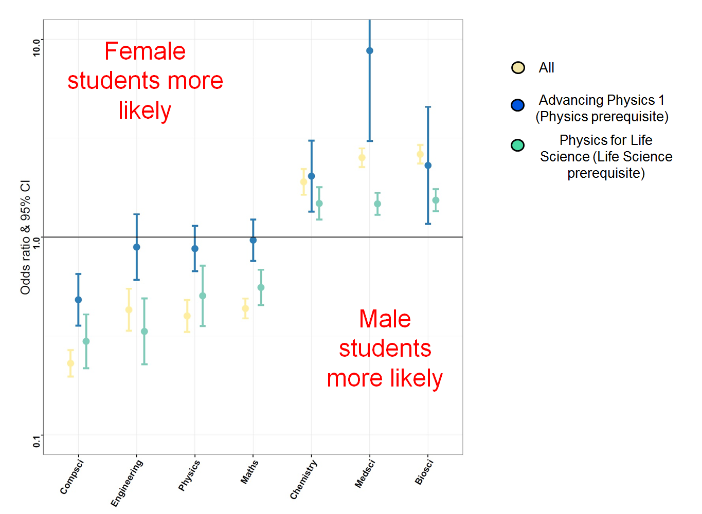

Transverse Movements

Female students more likely to take life science/chemistry after first year physics, regardless of orginal study intention
Male students more likely to study physics, maths, engineering - but gender differences not present for Advancing Physics 1 students (AP1)
Male students more likely to take compsci after first year physics, regardless of orginal study intention